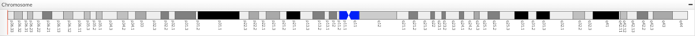
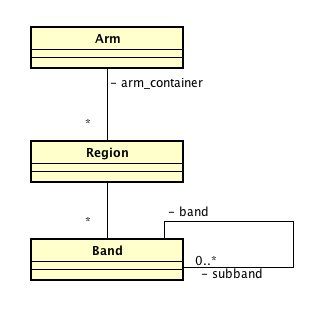
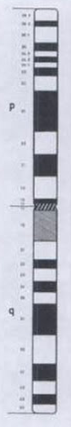
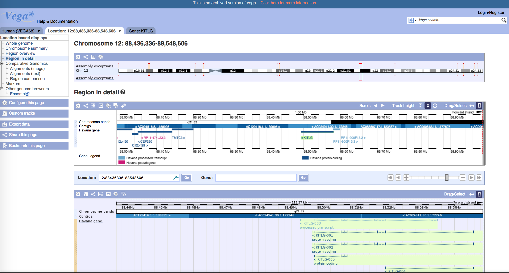

Ideograma

Ideograma de un cromosoma
Contexto:
-
El esquema de un cromosoma le permite al usuario identificar la disposición de variaciones o genes en el cromosoma.
-
Usuario necesita identificar patologías asociadas a un cromosoma. Para facilitar este proceso, es conveniente navegar por la secuencia genética y considerando referencias fácilmente reconocibles como sectores o segmentos del cromosoma que permitan localizar una determinada variación o anomalía en la secuencia genética. Dada la intensiva cantidad de datos de la secuencia y el nivel de detalle, el usuario fácilmente pierde la orientación en la secuencia de datos del cromosoma.
Problema:
-
Usuario necesita navegar por la secuencia genética de un cromosoma considerando referencias fácilmente reconocibles como sectores o segmentos del cromosoma.
Solución:
Desplegar un ideograma en un panel de la interfaz de usuario. Un ideograma es una representación
esquemática de un cromosoma, o complemento cromosómico, que incluye su patrón de bandas [1].
El ideograma representa un cromosoma compuesto de dos brazos. Uno largo y el otro corto, denominados q y p respectivamente. Cada
brazo está delimitado por regioneslas cuales están delimitadas por bandas, y estas a su vez, delimitadas por sub-bandas.
Las bandas son el resultado de la observación por microscopio al teñir el cromosoma con químicos y su
visualización está dada por una escala de grises.
La numeración de las regiones, bandas y sub-bandas dependen del punto centro del cromosoma,
denominado centrómero. Las bandas se numeran ascendentemente
empezando por 1, siendo 1 la banda más cercana al centrómero del
cromosoma.
Estructura:

Cuando:
-
USE CUANDO existen datos acerca del patrón de bandas.
-
USE CUANDO el análisis genético requiere la identificación y localización de elementos cromosómicos (p. ej. Genes, variaciones genéticas, bases).
Por Qué:
-
En una representación esquemática de un cromosoma, las bandas cromosómicas permiten identificar a cada cromosoma y localizar los loci genéticos (posición o lugar dentro de un cromosoma) de diferentes enfermedades mendelianas [1].
-
La nomenclatura de las bandas está dado por el International System for Chromosome Nomenclature (ISCN) y distingue jerárquicamente la delimitación por cromosoma, brazo, región, banda y sub-banda. Por ejemplo, la nomenclatura: 7q31.2 indica que se hace referencia a un sector dentro del cromosoma siete, brazo largo (q), región tres, banda uno, y separado por el punto, la sub-banda 2, como se muestra en la figura siguiente:

Ejemplos:

Fig. Idiograma del cromosoma 1 [1].
Otros ejemplos pueden encontrarse en VEGA:
Bibliografía
[1] Oliva,
Rafael, et al. Genética
médica.
Vol. 39. Edicions Universitat Barcelona, 2013.
[2]
Glosario de la Alicante.